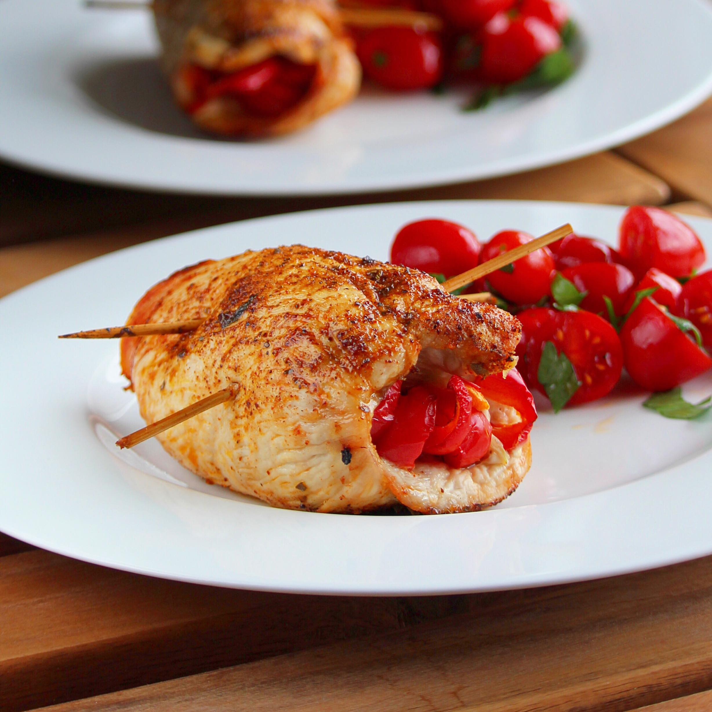

Mexican Stuffed Chicken Breasts

Description
Air fried chicken breast stuffed with vegetables and spices.
Ingredients
- 4 extra long toothpicks
- 4 teaspoons chili powder, divided
- 4 teaspoons ground cumin, divided
- 1 skinless, boneless chicken breast
- 2 teaspoons chipotle flakes
- 2 teaspoons Mexican oregano
- salt and ground black pepper to taste
- 1/2 red bell pepper, sliced into thin strips
- 1/2 onion, sliced into thin strips
- 1 fresh jalapeno pepper, sliced into thin strips
- 2 teaspoons corn oil
- 1/2 lime, juiced
Steps
- Place toothpicks in a small bowl and cover with water; let them soak to keep them from burning while cooking.
- Mix 2 teaspoons chili powder and 2 teaspoons cumin in a shallow dish.
- Preheat an air fryer to 400 degrees F (200 degrees C).
- Place chicken breast on a flat work surface. Slice horizontally through the middle. Pound each half using a kitchen mallet or rolling pin until about 1/4-inch thick.
- Sprinkle each breast half equally with remaining chili powder, remaining cumin, chipotle flakes, oregano, salt, and pepper. Place 1/2 the bell pepper, onion, and jalapeno in the center of 1 breast half. Roll the chicken from the tapered end upward and use 2 toothpicks to secure. Repeat with other breast, spices, and vegetables and secure with remaining toothpicks. Roll each roll-up in the chili-cumin mixture in the shallow dish while drizzling with olive oil until evenly covered.
- Place roll-ups in the air-fryer basket with the toothpick side facing up. Set timer for 6 minutes.
- Turn roll-ups over. Continue cooking in the air fryer until juices run clear and an instant-read thermometer inserted into the center reads at least 165 degrees F (74 degrees C), about 5 minutes more.
- Drizzle lime juice evenly on roll-ups before serving.